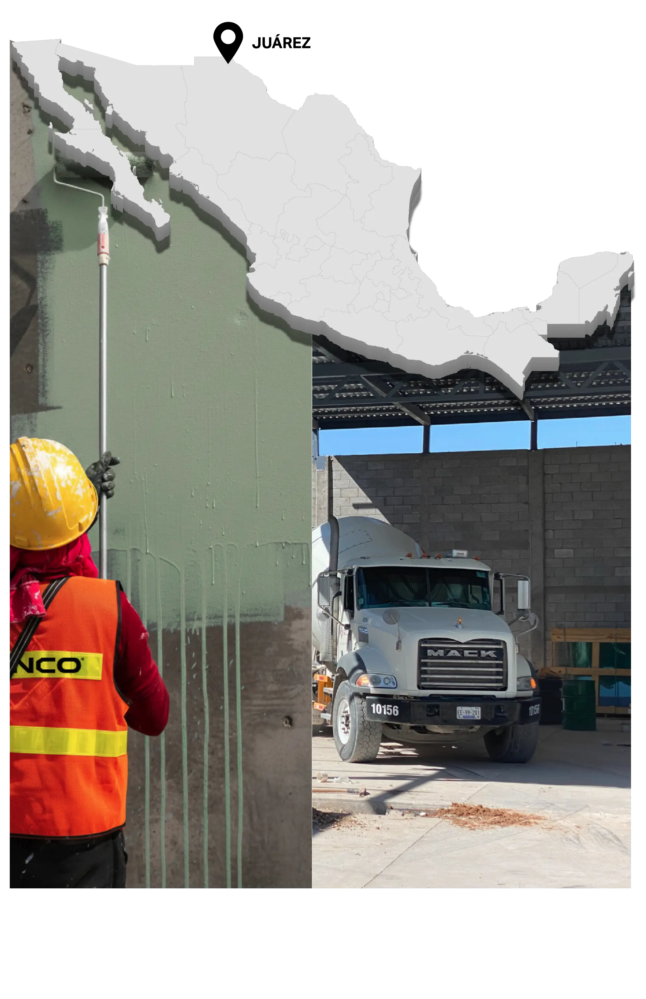
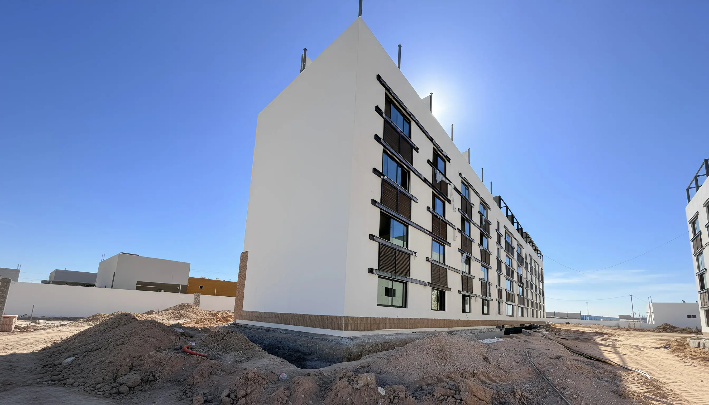

NOSOTROS
SIINCO es una empresa mexicana con sede en Ciudad Juárez, Chihuahua, dedicada al desarrollo de proyectos de construcción en los sectores comercial, industrial e institucional. Nos caracterizamos por ofrecer soluciones integrales que abarcan desde el proyecto y diseño hasta la ejecución, cuidando cada detalle técnico, estético y normativo. Nuestro enfoque se basa en la responsabilidad, la transparencia y la mejora continua.
EXPERIENCIA
MISIÓN
En SIINCO entendemos que cada proyecto representa una inversión, un riesgo y una expectativa real para quien lo impulsa. Por eso dirigimos los proyectos antes de que se conviertan en obra.
Nuestro trabajo es ordenar ideas, anticipar riesgos y tomar decisiones correctas desde la planeación, para que la inversión tenga rumbo, control y viabilidad real desde el primer día.
No ejecutamos por inercia ni por presión de tiempo. Dirigimos con criterio técnico, visión financiera y responsabilidad sobre cada decisión que impacta costos, tiempos y resultados.
Nuestro objetivo es acompañar al inversionista en las decisiones clave y lograr que cada proyecto se construya porque ya fue pensado, analizado y dirigido, no porque se improvisó.


VISIÓN
Creemos que los proyectos de alto valor no fracasan por falta de recursos, sino por falta de dirección clara y decisiones bien fundamentadas.
Buscamos posicionar la dirección de proyectos como la etapa más importante del desarrollo inmobiliario y comercial, el punto donde se protege la inversión, se eliminan errores costosos y se define el verdadero potencial de un proyecto.
SIINCO existe para darle certeza al inversionista, transformar la complejidad en claridad y lograr que construir deje de sentirse como una apuesta y se convierta en una decisión inteligente, estratégica y responsable.
VALORES
- Compromiso y responsabilidad con el cliente
- Honradez personal y profesional
- Transparencia en cada proyecto
- Trabajo en equipo
- Respeto y buen ambiente laboral